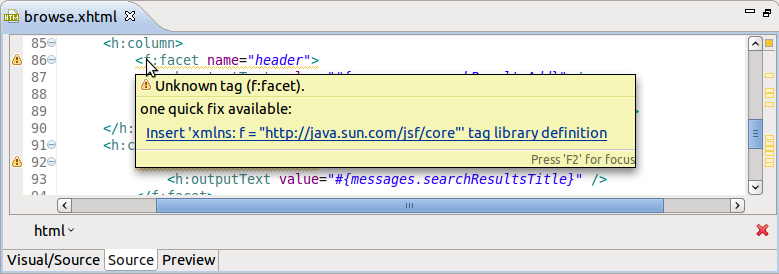
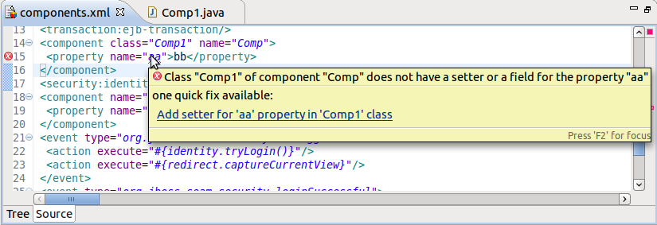
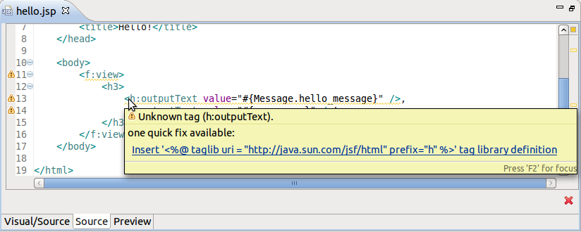
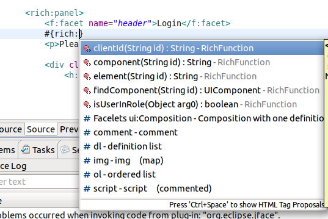
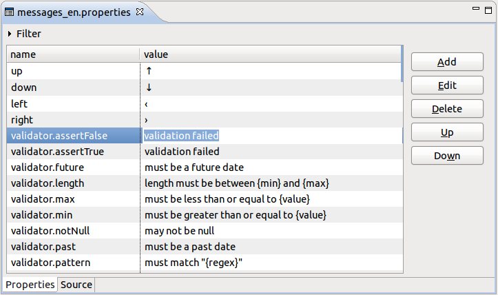
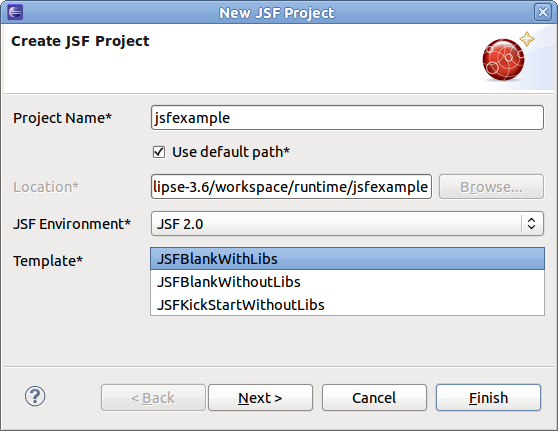
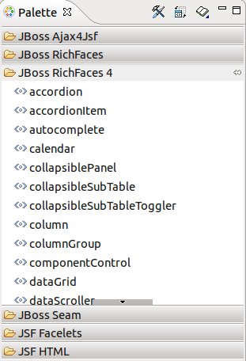
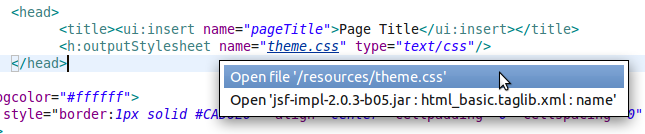

Quick Fix
In case of validation problem, Quick Fix menu is now shown in JBoss JSP/XHTML and XML editors (not only in Problems view). It's what you got used to in Java Editor.


Code completion for EL functions
JBoss XHTML/JSP editor now provides code completion for EL functions based on facelet tag library metadata.
Properties Editor
You can now edit cell rows directly in the editor. No need to double click anymore.
Project templates
Blank JSF 2.0 project templates w/ and w/o bundled required libraries are now available in New JSF Project wizard:
JBoss Palette
RichFaces 4 group in the palette was updated. So now it contains all the components from RichFaces 4.0.0.Final.
Be aware that this group is hidden by default. You can enable it via Show/Hide menu:

JSF 2
Hyperlinks (OpenOns)
CSS resource defined in <h:outputStylesheet> can now be navigated to via OpenOn (Ctrl+Click).
Also you can navigate to the related attribute from #{cc.attrs.*} in a composite component.